컴퓨터응용가공산업기사 (2016-05-08 기출문제)
1과목: 기계가공법 및 안전관리
1. 기어절삭에 사용되는 공구가 아닌 것은?
- 호브
- 래크 커터
- 피니언 커터
- 더브데일 커터
(정답률: 72%)

2. 드릴로 구멍을 뚫은 이후에 사용되는 공구가 아닌 것은?
- 리머
- 센터 펀치
- 카운터 보어
- 카운터 싱크
(정답률: 87%)
3. 밀링머신에서 육면체 소재를 이용하어 아래와 같이 원형 기등을 가공하기 위해 필요한 장치는?
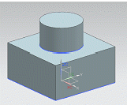
- 다이스
- 각도바이스
- 회전테이블
- 슬로팅장치
(정답률: 80%)
4. 200 rpm으로 회전하는 스핀들에서 6회전 휴지(dwell) NC프로그램으로 옳은 것은?
- G01 P1800;
- G01 P2800;
- G04 P1800;
- G04 P2800;
(정답률: 80%)
5. 칩 브레이커(chip breaker)에 대한 설명으로 옳은 것은?
- 칩에 한 종류로서 조각난 칩의 형태를 말한다.
- 드로우 어웨이(throw away) 바이트의 일종이다.
- 연속적인 칩의 발생을 억제하기 위핸 칩절단장치이다.
- 인서트 팁 모양의 일종으로서 가공 정밀도를 위한 장치이다.
(정답률: 90%)
6. 선반가공에 영향을 주는 조건에 대한 설명으로 틀린 것은?
- 이송이 증가하면 가공변질층은 증가한다.
- 절삭각이 커지면 가공변질층은 증가한다.
- 절삭속도가 증가하면 가공변질층은 감소한다.
- 절삭온도가 상승하면 가공변질층은 증가한다.
(정답률: 54%)
7. 다음 중 드릴 파손 원인으로 가장 거리가 먼 것은?
- 이송이 너무 커서 절삭저항이 증가할 때
- 디닝(thinning)이 너무 커서 드릴이 약해졌을 때
- 얇은 판의 구멍가공 시 보조판 나무를 사용할 때
- 절삭칩의 원활한 배출이 되지 못하고 가득차 있을 때
(정답률: 86%)
8. 수기가공에 대한 설명중 틀린 것은?
- 탭은 나사부와 자루 부분으로 되어있다.
- 다이스는 수나사를 가공하기 위한 공구이다.
- 다이스는 1번, 2번, 3번 순으로 나사가공을 수행한다.
- 줄의 작업순서는 황목 → 중목 → 세목 순으로 한다.
(정답률: 72%)
9. 피복 초경합금으로 만들어진 절삭공구의 피복처리방법은?
- 탈탄법
- 경남땜법
- 점용접법
- 화학증착법
(정답률: 54%)
10. 연삭숫돌의 결합제의 따른 기호가 틀린 것은?
- 고무 - R
- 셀락 - E
- 레지노이드 - G
- 비드리파이드 - V
(정답률: 74%)
11. 수기가공에 대한 설명으로 틀린 것은?
- 서피스 게이지는 공작물에 평행선을 긋거나 평행면의 검사용으로 사용된다.
- 스크레이퍼는 줄 가공 후 면을 정밀하게 다듬질 작업하기 위해 사용된다.
- 카운터 보어는 드릴로 가공된 구멍에 대하여 정밀하게 다듬질 하기 위해 사용된다.
- 선터펀치는 펀치의 끝이 각도가 60 ~ 90도 원뿔로 되어 있고 위치를 표시하기 위해 사용된다.
(정답률: 71%)
12. 연삭숫돌에 대한 설명으로 틀린 것은?
- 부드럽고 전연성이 큰 연삭에서는 고운입자를 사용한다.
- 연삭숫돌에 사용되는 숫돌입자에는 천연산과 인조산이 있다.
- 단단하고 치밀한 공작물의 연삭에는 고운입자를 사용한다.
- 숫돌과 공작물의 접촉면적이 작은 경우에는 고운 입자를 사용한다.
(정답률: 60%)
13. 나사를 측정할 때 삼침법으로 측정 가능한 것은?
- 골지름
- 유효지름
- 바깥지름
- 나사의 길이
(정답률: 80%)
14. 피치 3mm의 3줄 나사가 2회전 하였을 때 전진거리는?
- 8mm
- 9mm
- 11mm
- 18mm
(정답률: 80%)
15. 밀링머신에서 테이블 백래쉬(back lash) 제거장치의 설치 위치는?
- 변속기어
- 자동 이송레버
- 테이블 이송나사
- 테이블 이송핸들
(정답률: 77%)
16. 터릿 선반의 설명을 틀린 것은?
- 공구를 교환하는 시간을 단축할 수 있다.
- 가공 실물이나 모형을 따라 윤곽을 깎아낼 수 있다.
- 숙련되지 않은 사람이라도 좋은 제품을 만들 수 있다.
- 보통선반의 심압대 대신 터릿대(Turret Carriage)를 놓는다.
(정답률: 52%)
17. 연삭작업 안전사항으로 틀린 것은?
- 연삭숫돌의 측면부위로 연삭작업을 수행하지 않는다.
- 숫돌은 나무해머나 고무해어 등으로 음향검사를 실시한다.
- 연삭가공 할 때, 안전을 위하여, 원주정면에서 작업을 한다.
- 연삭잡업 할 때, 분진의 비산을 방지하기 위해 집진기를 가동한다.
(정답률: 80%)
18. 그림과 같이 더브데일 홈 가공을 하려고 할 때 X의 값은 약 얼마인가?(단, tan60° =1.7321 , tan30° = 0.5774 이다)
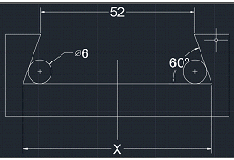
- 60.26
- 68.39
- 82.04
- 84.86
(정답률: 49%)
19. 절삭속도 150m/min, 절삭깊이 8mm, 이송 0.25mm/rev로 75mm 지름의 원형 단변봉을 선삭 때의 주축 회전수(rpm)는?
- 160
- 320
- 640
- 1280
(정답률: 68%)
20. 다음 중 초음파 가공으로 가공하기 어려운 것은?
- 구리
- 유리
- 보석
- 세라믹
(정답률: 59%)
2과목: 기계설계 및 기계재료
21. 담금질 조직 중 경도가 가장 높은 것은?
- 펄라이트
- 마텐자이트
- 소르바이트
- 투르스타이트
(정답률: 84%)
22. 금속간 화합물에 관하여 설명한 것 중 틀린 것은?
- 경하고 취약하다.
- Fe3C는 금속간 화합물이다.
- 일반적으로 복잡한 결정구조를 갖는다.
- 전기저항이 작으며, 금속적 성질이 강하다.
(정답률: 47%)
23. 순철에서 나타나는 변태가 아닌 것은?
- A1
- A2
- A3
- A4
(정답률: 55%)
24. 다음 구조용 복합재료 중에서 섬유강화 금속은?
- SPF
- FRM
- FRP
- GFRP
(정답률: 73%)
25. 다음 원소 중 중금속이 아닌 것은?
- Fe
- Ni
- Mg
- Cr
(정답률: 72%)
26. 특수강에 들어가는 합금 원소 중 탄화물형성과 결정립을 미세화하는 것은?
- P
- Mn
- Si
- Cr
(정답률: 35%)
27. 동합금에서 황동에 납을 1.5~3.7%까지 첨가한 합금은?
- 강력황동
- 쾌삭황동
- 배빗메탈
- 델타메탈
(정답률: 76%)
28. 알루미늄 및 그 합금의 질별 기호 중 가공경화한 것을 나타내는 것은?
- O
- W
- F3
- Hb
(정답률: 57%)
29. 강을 오스테나이트화 한 후, 공랭하여 표준화된 조직을 얻는 열처리는?
- 퀜칭(Quenching)
- 어닐링(Annealing)
- 템퍼링(Tempering)
- 노멀라이징(Normalizing)
(정답률: 68%)
30. 금속침투법에서 Zn을 침투시키는 것은?
- 크로마이징
- 세라다이징
- 칼로라이징
- 실리코나이징
(정답률: 68%)
31. 하중이 2.5KN 작용하였을 때 처짐이 100mm 발생하는 코일 스프링의 소선 지름은 10mm 이다. 이 스프링 유효 감김수는 약 몇 권인가? (단, 스프링 지수(C) 10이고, 스프링 선재의 전단탄성계수는 80GPa)
- 3
- 4
- 5
- 6
(정답률: 44%)
32. 벨트의 접촉각을 변화시키고 벨트의 장력을 증가시키는 역할을 하는 풀리는?
- 원동 풀리
- 인장 풀리
- 종동 풀리
- 원추 풀리
(정답률: 74%)
33. 다음 중 촉에는 가공을 하지 않고, 보스 쪽에만 홈을 가공하여 조립하는 키는?
- 안장 키(saddle key)
- 납작 키(flat key)
- 묻힘 키(sunk key)
- 둥근 키(round key)
(정답률: 66%)
34. 다음 중 제동 용 기계요소에 해당하는 것은?
- 웜
- 코터
- 랫칫 휠
- 스플라인
(정답률: 56%)
35. 피치원 지름이 무한대인 기어는?
- 래크(rack) 기어
- 헬리켈(Helical) 기어
- 하이포이드(Hypoid) 기어
- 나사(screw) 기어
(정답률: 58%)
36. 블록 브레이크 드럼이 20m/s의 속도로 회전하는데 블록을 500N의 힘으로 가압할 경우 제동 동력은 약 몇Kw인가? (단, 접촉부 마찰계수는 0.3이다.)
- 1.0
- 1.7
- 2.3
- 3.0
(정답률: 31%)
37. 구름 베어링에서 실링(Sealing)의 주목적으로 가장 적합한 것은?
- 구름 베어링에 주유를 주입하는 것을 돕는다.
- 구름 베어링의 발열을 방지한다.
- 윤활유의 유출 방지와 유해물의 침입을 방지한다.
- 축에 구름 베어링을 끼울 때 삽입을 돕는다.
(정답률: 72%)
38. 300 rpm으로 3.1kW의 동력을 전달하고, 축 재료의 허용전단응역은 20.6MPa인 중실축의 지름은 약 몇 mm이상이어야 하는가?
- 20
- 29
- 36
- 45
(정답률: 41%)
39. 30°미터 사다리꼴 나사(1줄 나사)의 유효지름이 18mm 이고, 피치는 4mm 이며 나사 접축부 마찰계수는 0.15일 때 이 나사의 효율은 약 몇 %인가?
- 24%
- 27%
- 31%
- 35%
(정답률: 37%)
40. 두께 10mm 강판을 지름 20mm 리벳으로 한줄 겹치기 리벳 이름을 할 때 리벳에 발생하는 전단력과 판에 작용하는 인장력이 같도록 할 수 있는 피치는 약 몇mm인가? (단, 리벳에 작용하는 전단응력과 판에 작용하는 인장응력은 동일하다고 본다.)
- 51.4
- 73.6
- 163.6
- 2⑤.6
(정답률: 23%)
3과목: 컴퓨터응용가공
41. 다음 직선의 식을 매개 변수식으로 옳게 표현한 것은?
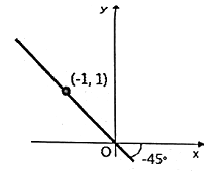
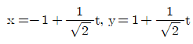
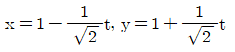
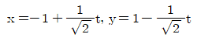
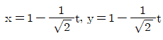
(정답률: 49%)
42. CAD 데이터 교환을 위한 중립 파일을 중 특수한 서식의 문자열을 가진 아스키(ASCⅡ)파일인 것은?
- CAT
- DXF
- GKS
- PHIGS
(정답률: 65%)
43. 3차원 모델링 표현방법 중 3차원 공간을 작은 단위 입체로 분할하고 물차가 이 단위 입체를 점유하는 여부에 따라 대응하는 memory bit를 0 또는 1로 표현하는 방법은?
- 경계표현
- 메쉬표현
- 복셀표현
- CSG표현
(정답률: 51%)
44. 일반적인 CAD/CAM작업의 순서로 옳은 것은?
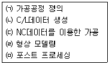
- ㈀ → ㈁ → ㈂ → ㈃ → ㈄
- ㈃ → ㈁ → ㈂ → ㈀ → ㈄
- ㈀ → ㈃ → ㈄ → ㈁ → ㈂
- ㈃ → ㈀ → ㈁ → ㈄ → ㈂
(정답률: 67%)
45. 은선 및 은면 처리를 위해 화면에 표시되어야 할 형상 요소들의 깊이 방향 값을 메모리에 저장하여 이용하는 방법은?
- Z 버퍼 방법
- 변환 행렬 방법
- 깊이 분류 알고리즘
- 후향면 제거 알고리즘
(정답률: 51%)
46. 현재 공구 위치(0,0)에서 다음 위치(40,30)mm 까지 공구를 10mm/s의 속도로 이송하기 위해 X축 모터에 보내야 할 펄스 속도는? (단, BLU = 0.001 이다.)(문제 오류로 보기 내용이 정확하지 않습니다. 정확한 보기 내용을 아시는분 께서는 오류 신고를 통하여 보기 내용 작성 부탁 드립니다.)
- 3000개/sec
- 4000개/sec
- 6000개/sec
- 8000개/sec
(정답률: 38%)
47. 현재 공구 위치 (0,0) 에서 다음 위치 (40,30)mm까지 공구를 10mm/s의 속도로 이송하기 위해 x축 모터에 보내야 할 펄스의 속도는?(단, BLU=0.001mm이다.)(오류 신고가 접수된 문제입니다. 반드시 정답과 해설을 확인하시기 바랍니다.)
- 3000개/sec
- 4000개/sec
- 6000개/sec
- 8000개/sec
(정답률: 31%)
48. NC공작기계 하드웨어의 구송요소를 볼 수 없는 것은?
- 파트 프로그램(part program)
- 제어 루트 장치(Control Loop Unit:CLU)
- 기계 제어 장치(Machine Control Unit; MCU)
- 데이터 처리 장치(Data Processing Unit; DPU)
(정답률: 65%)
49. 주사선 방식의 그래픽 장치는?
- plasma gas dasplay
- raster scan display
- liquid crystal display
- lighting emitting diodes display
(정답률: 53%)
50. 수치제어에서 사용되는 파트 프로그램에 들어있지 않은 정보는?
- 공구 교환
- 절삭유 공급/중지
- 절삭공구의 동작 정보
- 파트 프로그램에 사용된 곡선의 종류
(정답률: 67%)
51. 모델 중에서 실루엣(silhouette)이 정확하게 표현될 수 있는 모델들로 짝지어진 것은?
- Surface Model, Solid Model
- Solid Model, Wire frame Model
- Wireframe Model, Surface Model
- Wireframe Model, plane Draft Model
(정답률: 73%)
52. 베지어(Bezier) 곡면의 특징으로 틀린 것은?
- 곡면의 코너와 코너 조정점이 일치한다.
- 곡면은 조정점의 일반적인 형상을 따른다.
- 곡면의 차수는 조정점의 개수에 의해 정해진다.
- 곡면은 조정점들의 블록포(Convex hull) 외부에서 생성된다.
(정답률: 60%)
53. 곡면 모델(surface model)의 특징으로 틀린 것은?
- 은선 제거가 가능하다.
- CAM 가공을 위한 모델로 사용이 가능하다.
- 생성된 모델의 체적을 계산하기가 용이하다.
- 3차원 유한요소를 사용하기에 부적절한 모델이다.
(정답률: 70%)
54. 다음 중 3차원 자유 곡면을 가공하기에 가장 적합한 공구는?
- 더브테일 커터
- 볼 엔드밀
- 플렛 엔드밀
- 필렛 엔드밀
(정답률: 82%)
55. 종이 형태의 박판재료를 절단하여 적층하는 RP기법은?
- SL
- FDM
- LOM
- SLS
(정답률: 56%)
56. 사용자가 형상 구속조건과 치수조건을 이용하여, 형상을 모델링하는 방식은?
- Surface 모델링
- Boundary 모델링
- Parametric 모델링
- primitive 모델링
(정답률: 70%)
57. 다음 식으로 표현된 도형의 결과로 옳은 것은?(단, Xc, Yc는 임의의 좌표 값이고 r은 양의 실수이다.)
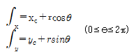
- 원
- 타원
- 쌍곡선
- 포물선
(정답률: 47%)
58. 가공면을 자동적으로 인식 처리하며 NC데이터 작성이 용이한 모델은?
- 실물 모델
- 곡면 모델
- 유한요소 모델
- 와이어 프레임 모델
(정답률: 47%)
59. 화면에 그려진 솔리드 모델의 음영효과(shading)를 결정하는 주된 요소?
- 모델의 크기
- 화면의 배경색
- 평행광선의 경우, 모델과 조명과의 거리
- 모델의 표면을 구성하는 면의 수직 벡터
(정답률: 57%)
60. DNC 운전 시 데이터 전송속도를 나타내는 것은?
- BPS
- CPS
- IPS
- MIPS
(정답률: 73%)
4과목: 기계제도 및 CNC공작법
61. 그림과 같이 나타난 단면도의 명칭은?
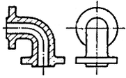
- 온단면도
- 회전도시 단면도
- 한쪽 단면도
- 부분 단면도
(정답률: 60%)
62. 다음과 같이 상호 관련된 구멍 4개의 치수 및 위치 허용 공차에 대한 설명으로 틀린 것은?
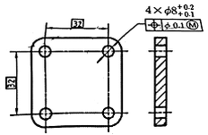
- 각 형태의 실제 부분 크기는 크기에 대한 허용공차 0.1의 범위에 속해야 하며, 각 형태는 ø8.1에서 ø8.2 사이에서 변할 수 있다.
- 각 형태의 지름이 ø8.2인 최소 재료 크기일 경우 각 형태의 축은 ø0.1인 허용공차 영역내에서 변할 수 있다.
- 각 형태의 지름이 ø8.1인 최대 재료 크기일 경우 각 형태의 축은 ø0.1의 위치허용공차 범위에 속해야 한다.
- 모든 허용공차가 적용된 형태는 실질 조건 경계, 즉 ø8(=ø8.1-0.1)의 완전한 형태의 내접 원주를 지켜야 한다.
(정답률: 43%)
63. 그림과 같은 평면도에 대한 정면도로 가장 옳은것은?
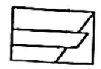
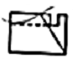
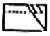
(정답률: 55%)
64. 그림과 같은 입체도를 화살표 방향에서 보았을 때 가장 적합한 투상도는? (문제 복원 오류로 그림이 정확하지 않습니다. 정확한 그림 내용을 아시는분 께서는 오류신고 또는 게시판에 작성 부탁드립니다.)
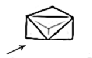
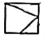
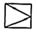
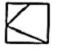
(정답률: 46%)
65. 다음과 같은 도면에서 플랜지 A부분의 드릴구멍의 지름은?
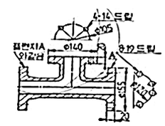
- 4
- 14
- 19
- 8
(정답률: 60%)
66. 평행 핀에 대한 호칭 방법을 옳게 나타낸 것은?(단, 오스테나이트계 스테인리스강 Al등급이고, 호칭 지름 5mm, 공차 h7, 호칭길이 25mm 이다.)(오류 신고가 접수된 문제입니다. 반드시 정답과 해설을 확인하시기 바랍니다.)
- 평행 핀 - h7 5 X 25 - Al
- 5h7 x 25 - Al - 평행 핀
- 평행 핀 - 5 h7 x 25 - AL
- 5 h7 x 25 - 평행 핀 - AL
(정답률: 54%)
67. 표면 결 도시방법 및 면의 지시기호에서 가공으로 생긴 건 모양의 약호로 “C"의 의미는?
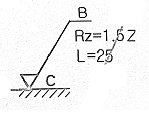
- 거의 동심원
- 다방면으로 교차
- 거의 방사상
- 거의 무방향
(정답률: 73%)
68. 기준치수 49.000mm, 최대허용 치수 49.011mm, 최소 허용치수 48.985 일 때, 위 치수 허용차와 아래치수 허용차는? (순서대로 위치수 허용차/아래치수 허용차)
- + 0.011mm / - 0.085mm
- - 0.015mm / + 0.011mm
- - 0.025mm / + 0.025mm
- + 0.011mm / - 0.015mm
(정답률: 78%)
69. 유압, 공기압 도면 기호에서 그림의 기호 명칭으로 옳은 것은?
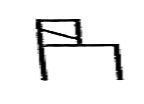
- 단동 솔레노이드
- 복동 솔레노이드
- 단동 가변식 전자 액추에이터
- 복동 가변식 전자 액추에이터
(정답률: 65%)
70. 도면 양식에서 용지를 여러 구역으로 나누는 구역 표시를 하는 데 있어서 세로 방향으로 대문자 영어를 표시한다. 이 때 사용해서는 안되는 문자는?
- A
- H
- K
- O
(정답률: 64%)
71. 2축 제어방식 CNC공작기계로 할수 없는 제어는?
- 위치 결정
- 원호 보간
- 직선 보간
- 헬리켈 보간
(정답률: 79%)
72. 아래 그림에서 절대지령 방식에 의한 이동을 지령하고자 할 때, 옳은 것은?
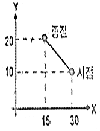
- G90 G01 X15.0 Y20.0 F100;
- G90 G01 X-15.0 Y10.0 F100;
- G91 G01 X15.0 Y20.0 F100;
- G91 G01 X-15.0 Y10.0 F100;
(정답률: 56%)
73. CNC공작기계에서 작업을 수행하기 위한 제어방식 중 틀린 것은?
- 위치결정 제어
- 직선절삭 제어
- 평면절삭 제어
- 윤곽절삭(연속절삭) 제어
(정답률: 60%)
74. 방전가공에서 방전이 진행되는 과정으로 옳은 것은?
- 방전개시 → 기화상태 → 폭발 → 용융비산 → 방전휴지
- 방전개시 → 폭발 → 용융비산 → 기화상태 → 방전휴지
- 방전개시 → 폭발 → 기화상태 → 용융비산 → 방전휴지
- 방전개시 → 용융비산 → 기화상태 → 폭발 → 방전휴지
(정답률: 54%)
75. CNC공작기계의 가공용 프로그램에서 주축 정회전을 지령하는 보조기능은?
- M02
- M03
- M04
- M⑤
(정답률: 73%)
76. CNC공작기계에 사용되는 볼 스크루에 대한 설명 중 틀린 것은?
- 마찰이 적다.
- 동력손실이 적다.
- 백 래시가 거의 없다.
- 부하에 따른 마찰열에 의하여 열팽창이 크다.
(정답률: 73%)
77. 보조 프로그램을 호출 할수 있는 기능은?
- G30
- G98
- M98
- M99
(정답률: 72%)
78. CNC선반에서 지령값 X25.0으로 프로그램 하여 내경을 가공후 측정 하였더니 ø24.4이였다. 해당공구의 공구 보정값은? (단, 현재의 공구 보정값은 X4.2, Z6.0이고, 직경 지정임.)
- X=4.8, Z=6.0
- X=4.8, Z=6.6
- X=3.5, Z=6.0
- X=3.6, Z=6.6
(정답률: 64%)
79. CNC선반의 어드레스 중 일반적으로 지름지정으로 지령하는 것은?
- R10.0
- U10.0
- I5.0
- K5.0
(정답률: 56%)
80. 머시닝센터에서 ø16,2날 엔드밀을 사용하여 G94 F100으로 프로그램 가공할 때 한 날당 이송속도는? (단, 주축은 400rpm으로 회전한다.)
- 0.125 mm/tooth
- 0.25 mm/tooth
- 0.5 mm/tooth
- 0.4mm/tooth
(정답률: 47%)